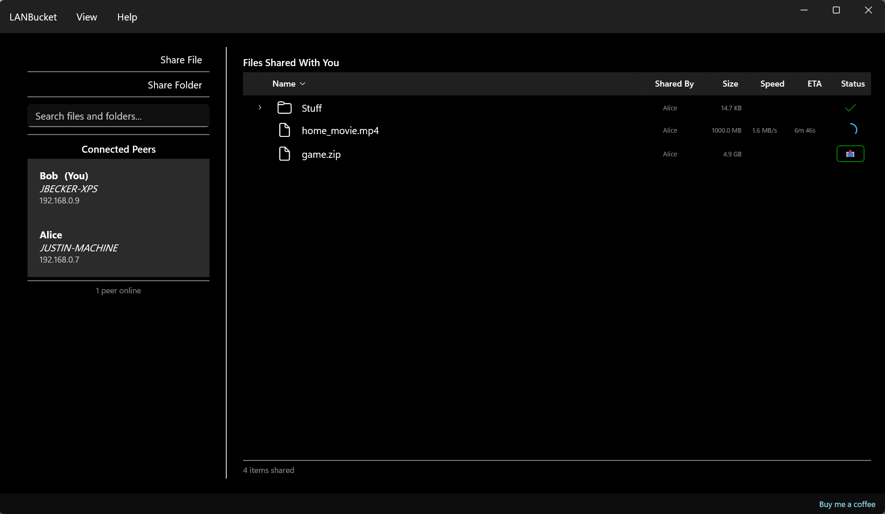

Simple File Sharing on Your Local Network
LANBucket makes it easy to share files between devices on the same network. Great for LAN parties, large files, and fast transfers around the house. No internet required, no cloud storage, just direct sharing between your devices.

Download LANBucket
Free on Microsoft Store
Get automatic updates and easy installation
System Requirements
- Windows 10 version 1809 or later, or Windows 11
- x64 or ARM64 processor
- Local network connection (WiFi or Ethernet)
Why Choose LANBucket?
Fast Distributed Transfers
Files transfer using distributed technology, meaning all clients share the load, resulting in faster overall transfer speeds.
Perfect for LAN Parties
Share large files across multiple devices without everyone downloading from the internet simultaneously. Much faster than traditional file shares.
Automatic Discovery
Other devices running LANBucket on your network are automatically discovered. No manual configuration needed.
Local Network Only
All traffic stays on your local network. No internet connection required. Your files remain completely private and secure.
Drag & Drop
Simply drag and drop files or folders to share them instantly with other users on your network.
See Who's Connected
View all connected peers with their machine and user names to know exactly who you're sharing with.
How It Works
-
Install LANBucket
Download and install LANBucket on Windows devices that are connected to the same local network (WiFi or Ethernet).
-
Automatic Discovery
LANBucket automatically discovers other instances on your network using multicast peer discovery.
-
Share Files
Drag and drop files or folders to share them. Other users will see your shared items and can download them.
-
Download
Browse files shared by others and download them directly to your device. Since LANBucket uses distributed technology, downloads are fast even when multiple users are downloading simultaneously.
Built on Proven Technology
LANBucket uses distributed file sharing technology for reliable and efficient transfers. The application is built with modern Windows technologies including WinUI 3 and the Windows App SDK for a native, performant experience.
How LANBucket Compares
| Feature | LANBucket | DC++ | D-LAN | LocalSend | SMB Share | Cloud Storage | Steam® Local Sharing | Flash Drive |
|---|---|---|---|---|---|---|---|---|
| No setup or configuration | Yes | No. DC++ makes you add a hub to connect to and set up your share list before you can use it. | Partial. D-LAN works quickly, but you still pick shared folders and confirm network settings first. | Yes | No. SMB shares require enabling sharing, setting permissions, and mapping drives. | No. You must create an account, install a client, and let it sync before sharing anything. | Partial. You need Steam installed and signed in, plus the relevant sharing setting enabled. | No. The drive has to be formatted for your devices and physically plugged into each one. |
| No account or sign-in required | Yes | Yes | Yes | Yes | No. SMB on Windows needs valid user credentials to authenticate access. | No. Cloud storage requires creating and signing into an account before you can transfer files. | No. You must have a Steam account and be signed in to use any Steam feature. | Yes |
| Distributed (many-to-many) transfers | Yes | Partial. DC++ can pull a file from several peers at once, but only once the other peer has completed the download. LANBucket allows downloading from peers who don't have the complete file. | Yes | No. LocalSend sends directly from one device to another, one transfer at a time. | No. An SMB share is served by a single host, so everyone downloads from that one machine. | No. Transfers go through the provider's servers rather than directly between many local peers. | No. Content comes from a single host, not many peers sharing the load. | No. A flash drive is copied to one machine at a time by hand. |
| Automatic peer discovery | Yes | No. There's no auto-discovery. Users have to manually setup hub addresses. | Yes | Yes | No. You need the host name or IP address of the share to connect to it. | No. You need to somehow get the download link to all other users. | Yes | No. You need to sneakernet that thing around. |
| Stays on your local network | Yes | Partial. DC++ can run on a LAN, but many public hubs route your traffic over the internet. | Yes | Yes | Yes | No. Cloud storage uploads your files to remote servers on the internet. | Partial. Local streaming stays on your LAN, but Steam still contacts its servers to sign you in. | Yes |
| Share any file with drag & drop | Yes | No. DC++ shares whole folders you configure in advance, not files dropped in on the spot. | Partial. D-LAN shares from designated folders rather than quick drag-and-drop of any file. | Yes | Partial. You can drop files into a shared folder, but only after the share and permissions are set up. | Yes | No. Steam only shares games and library content, not arbitrary files. | Partial. You can drag files onto the drive, but it must be plugged in and carried to each device. |
| Simple UI for non-technical users | Yes | No. DC++ has a dense, technical interface built around hubs, slots, and download queues. | No. D-LAN's interface assumes some comfort with networking and shared folders. | Yes | No. SMB setup involves OS settings, permissions, and drive mapping that trip up non-technical users. | Yes | Yes | Yes |
| Works without the internet | Yes | Yes | Yes | Yes | Yes | No. Cloud storage needs an internet connection to reach the provider's servers. | No. Steam normally needs the internet to sign in before its features work. | Yes |
| On-the-fly compression | Yes | No. DC++ transfers files without any automatic compression. | No. D-LAN transfers files without any automatic compression. | No. LocalSend transfers files without any automatic compression. | No. SMB transfers files without any automatic compression. | No. Cloud transfers files without any automatic compression. | No. Steam Local Sharing files without any automatic compression. (Even though Steam downloads from the internet DO use compression) | No. Copying to a flash drive doesn't compress your files automatically. |
For more details: Why I built LANBucket.
Steam is a registered trademark of Valve Corporation. LANBucket is not affiliated with, endorsed by, or sponsored by Valve Corporation. All other product names, logos, and brands are the property of their respective owners.
Frequently Asked Questions
Does LANBucket work over the internet?
No, LANBucket only works on local networks. All devices must be connected to the same WiFi network or Ethernet LAN. This is by design to keep your files private and secure.
Will it work on my corporate network?
Many corporate networks block client-to-client communication for security reasons, which may prevent LANBucket from working properly. LANBucket is designed primarily for home and private networks.
If multicast is blocked, will LANBucket still work?
Yes, probably. LANBucket has a fallback peer discovery mechanism using a central server, so even if multicast is blocked on your network, devices can still find each other and share files. If this mechanism doesn't work, you can connect to peers by manually entering the IP address of the device you want to connect to.
All of my clients are on the same Wifi network, but some of them can't see each other. Why?
Many WiFi routers have "AP isolation" or "client isolation" features that prevent devices connected to the same WiFi network from communicating with each other. Check your router settings to see if this feature is enabled. Also, we have seen some cases where some wireless routers/access points don't allow client-to-client traffic if they are on different frequency bands, ie. if one client is connected to 2.4GHz and another client is connected to 5GHz. If possible, try connecting all clients to the same frequency band on your WiFi network, or connect them via Ethernet for best results.
Can I use it with a VPN?
VPN connections may interfere with local network discovery. You may need to disconnect from your VPN to use LANBucket.
What happens if I modify a shared file?
Moving, deleting, or modifying a file that you're sharing will prevent others from downloading it. Keep shared files in place until others have completed their downloads.
Is my firewall going to block LANBucket?
Windows Defender Firewall may block LANBucket from discovering devices. Make sure that you have set the network profile to "Private" and allowed LANBucket through the firewall when prompted on first launch.
Is there Linux or MacOS support?
Not yet, but we are considering it. At present LANBucket is built using Windows-specific UI frameworks, so Linux/MacOS support would require substantial rework. Unfortunately, LANBucket is not compatible with Wine/Proton either, since we use Windows APIs that are not implemented there either.
What is on-the-fly compression?
LANBucket automatically compresses files as they're sent and decompresses them as they arrive, all in real time. You don't have to zip anything up first or wait for an archive to build. For files that compress well, like some video games, you may be able to observe significantly faster transfer speeds.
Is LANBucket free?
Yes! LANBucket is completely free to use, and we're committed to keeping it ad-free. If you'd like to support development, you can buy us a coffee. Your support is appreciated but never required.
I found a bug, translation error, or have a feature request. Where do I report it?
We'd love to hear from you! Please fill out this form with details. We review all submissions and appreciate your feedback.
Support Us
LANBucket is free, ad-free, and always will be. If you find it useful and want to support continued development, consider buying us a coffee. Your support helps keep the project alive!
Buy Me a CoffeeLegal Notice
This software is provided for personal use only. Use at your own risk. The developers assume no liability for any data loss, security issues, or other problems that may arise from using this software.